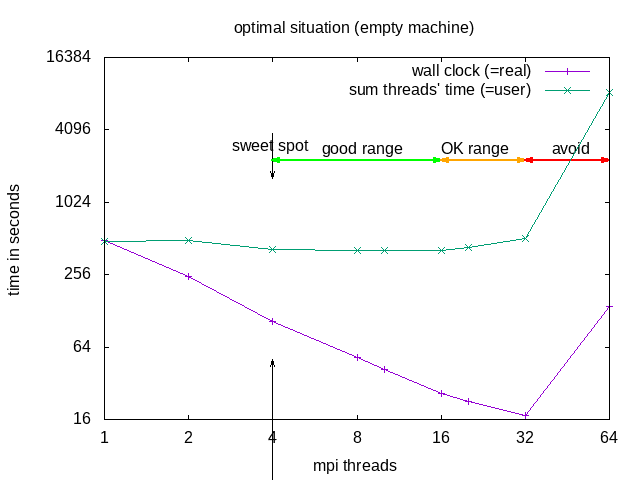

not changed to rocky yet
Performance
How fast is your program? How good makes it use of available hardware? Could it run faster on the same hardware?
Benchmarking
Benchmarking is the art and skill to find out how fast your program and hardware is. Many factors influence the execution time of your program, the obvious ones are the speed and type of processors, speed of memory, etc, but also the less obvious ones have a huge impact (maybe larger than the speed of the processor). The less obvious ones include programming style and language! Yes, there are slow and fast languages. Slow languages include Python and basic, fast languages include C, Fortran, Julia and Rust. The programming style has an impact as well, as it influences memory access and optimization possibilities of the compiler/interpreter.
In order to find out just how fast your hardware is, you need a software that uses all of the available components in an optimal way.
Desktop vs. Compute Node
Compute nodes do not have higher clock frequencies than desktop computers, but they have more cores and more RAM
A single thread job on your desktop probably uses “boost-frequency” when the other cores are idle, a compute node has usually many busy cores and therefore “boost-frequency” is not possible
A CPU has typically 6 memory channels, several applications share these on the compute node, while on the desktop only your single application uses them.
not enough to do for each core (task)
load imbalance, some tasks need to wait till another task finishes
communication between tasks introduces overhead
congestion of memory channels (see above)
Parallel scaling
The assumption that all programs run faster when more cores are used is generally wrong. Especially a seqential (single threaded) program will not be able to use more than 1 core, but also for parallel programs there is an optimum of how many cores to use. The relationship between program speed and number of cores used is called scaling. Usually the scaling needs to be tested! It is not uncommon that programs run slower when more cores are used. For the rational use of resources, it is necessary to determine the optimum of this particular program.
Strong scaling
Strong scaling is defined as how the solution time varies with the number of processors for a fixed total problem size.
If a simulation exhibits strong scaling, then the same problem is solved faster with linear speedup and the workload per processor is reduced. Strong scaling is mostly used for long-running CPU-bound applications. However, the speedup achieved by increasing the number of processes usually decreases.
Weak scaling
Weak scaling is defined as how the solution time varies with the number of processors for a fixed problem size per processor.
Thus, both the number of processors and the problem size are increased, which results in a constant workload per processor. Weak scaling is mostly used for large memory-bound applications.
How many cores or tasks to use?
NOTE: Parallel does not (necessarily) mean faster!!! Parallel execution introduces overhead (starting threads, communication)! For optimal execution time and optimal use of resources one needs to test (run the same (a typical) simulation with different numbers of parallel tasks) and find the sweet spot.

The division into the areas is a combined decision taking into account “real” (wall clock) and “user” (summed time of all threads) time (from the time command). “Wall clock” (real) time is the time one needs to wait till the job is finished, “Summed thread time” (user) is the sum of the times that all individual threads needed, it should be roughly user = numtreads x real. For parallel programs, one can expect that “user” time of the parallel run is larger than for the sequential, due to communication overhead, if it is smaller, that probably means the individual threads could make better use of cache.
| area | why | explanation | when to use |
|---|---|---|---|
| sweet spot | minimal "user" time | = minimal heat production, optimal use of resources | regular use |
| good range | linear speedup for "real", with constant or slightly increasing "user" | approaching deadline | |
| OK range | slightly less than linear speedup for "real", and slightly increasing "user" | pushing hard to make a deadline | |
| avoid | ascending slope in the diagram for "real" and "user" | one actually needs to wait longer compared to the case with fewer cores | NEVER |
In our example case, it is recommended to request 4 or 8 threads; 8 threads if the software does not benefit from HyperThreading: -n 8 --ntasks-per-node 8 but use mpirun -n 4, this would make sure the software has the full cores for itself and not be sharing it with other software.
A rule of thumb for FEA/CFD is: keep at least 50000 cells per core (500k cells means not more that 10 tasks or cores).
Here are a couple more examples:
Matrix-matrix multiplication of two 2000x2000 matrices:
Wall-clock time of the whole job:
| ntasks | none | bind cores | bind threads | bind sockets |
|---|---|---|---|---|
| 2 | 57.198766 | 56.398039 | 57.485236 | 56.268668 |
| 4 | 28.018947 | |||
| 8 | 20.035140 | |||
| 16 | 11.012887 | |||
| 32 | 4.914047 | 5.050369 | 5.454213 | |
| 40 | 3.951628 | |||
| 48 | 3.309776 |
CPU-efficiency reported by SLURM:
| ntasks | none | bind cores | bind threads | bind sockets |
|---|---|---|---|---|
| 2 | 97.46% | 97.41% | 97.46% | 97.41% |
| 4 | 94.17% | |||
| 8 | 81.82% | |||
| 16 | 77.68% | |||
| 32 | 71.18% | 69.10% | 73.61% | |
| 40 | 61.11% | |||
| 48 | 60.19% |
Billed CPU-time:
| ntasks | none | bind cores | bind threads | bind sockets |
|---|---|---|---|---|
| 2 | 1:56 | |||
| 4 | 2:00 | |||
| 8 | 3:28 | |||
| 16 | 3:44 | |||
| 32 | 4:48 | |||
| 40 | 6:00 | |||
| 48 | 7:12 |
Simple way to check if CPUs are busy enough: run an interactive session on the same node:
srun -w green<Nnmber> --pty bash
htop
ideally the bars of your process are all green. To find your the processor of your job, you can add a column or use
ps aux |grep $USER # to get the PID
taskset -c -p PID
(add 1 to the number from taskset to find the processor in htop, because taskset starts from 0, htop from 1).
These jobs have spend over 90% CPU-time in calculations:
This jobs spends already much more CPU-time in communication:
This jobs spends less than 10% CPU-time in calculation and over 90% in communication, reducing the number of ntasks will probably speed it up considerably:
Clean vs. fast code (Python)
Clean Code states:
The first rule of functions is that they should be small. The second rule of functions is that they should be smaller than that.
Someone reading the code for the first time is hopping around the code to find out what the tiny functions are actually doing.
Hot and cold code is mixed (instruction cache misses).
Function calls are expensive, especially in Python, regarding computation time. (In contrast to Python, a C/C++/Fortran compiler may inline small functions, thus solving the issue, though there is no guarantee that the compiler will inline, not even with the inline statement.)
A lot of variables have to be passed over multiple levels of function calls, thus increasing memory use and cache misses. Object orientation and global variables are used as a remedy for this, but this leads to functions with side effects (the reader does not know what variables the function is changing by looking at the function call).
An example of the time function calls can waste
An example of the time function calls can waste:
Time the following codes:
for i in range(n):
pass
and:
def f():
pass
for i in range(n):
f()
An average function call in Python costs about 150ns, this means that you loose about 2-3 orders of magnitude of processor speed! That means that your fancy 2.5 GHz from 2021 runs as slow as a 25 MHz processor from 1991 (or even as slow as a 2.5 MHz processor)! Now that’s something to think about.
A good read on this are the-cost-of-a-python-function-call and python_function_call_overhead; and so is small-functions-considered-harmful.
To learn:
Use meaningful function blocks. Define functions for code-blocks that are re-used in other parts of the program. Do not define 1-line functions, except you have a very good reason!
Are newer processors better/faster in every case? When does it make sense to switch to the newer nodes? When does it make sense to still use the older nodes?
Intel Xeon E5-2630L 6C 2.00 GHz (max turbo 2.50 GHz) 4 memory channels 42.6 GB/s max memory bandwidth (~10.65 GiB/s memory bandwidth per channel) GFlops per core or CPU
memory channels per core: 4/6 (0.75) bandwidth per core: ~7.99 GiB/s bandwidth per GFlop:
Xeon Gold 6148 20C 2.40 GHz (max turbo 3.70 GHz) Turbo Frequency (20 Cores): 3.00 GHz 6 memory channels 119.21 GiB/s max memory bandwidth 19.87 GiB/s memory bandwidth per channel GFlops per core or CPU
memory channels per core: 6/20 (0.30) bandwidth per core: 5.961 GiB/s bandwidth per GFlop: 0.133 GiB/s
Bandwidth Single 19.87 GiB/sDouble 39.74 GiB/sQuad 79.47 GiB/sHexa 119.21 GiB/s